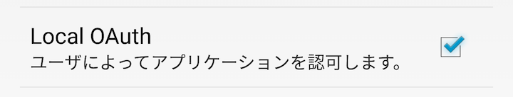
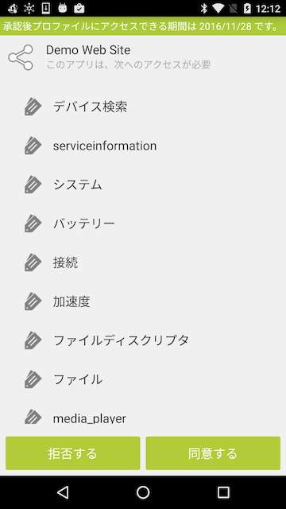

アプリがDevice Connect Managerを使用する前に使用許可を求めるダイアログを表示します。
ダイアログには、アプリが使用するプロファイル一覧などが表示されます。

同意するを押下した場合には、アプリにアクセストークンが発行され、Device Connect Managerへのアクセスができるようになります。
拒否するを押下した場合には、アプリにアクセストークンを発生せずに、Device Connect Managerへのアクセスをさせません。
一度、同意したアプリは、アクセストークンの有効期限が切れるか、削除されるまでDevice Connect Managerへのアクセスすることができます。
アプリの識別には、Originを使用しますので、Local OAuthを使用する場合には、Origin有効化する必要があります。
Local OAuthの設定が無効になっていると許可を求めるダイアログが表示されずにアクセスされますので、ご注意ください。